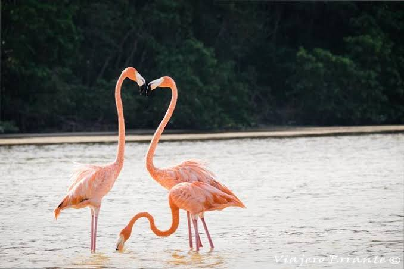
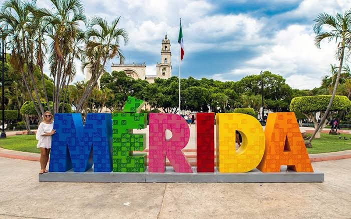
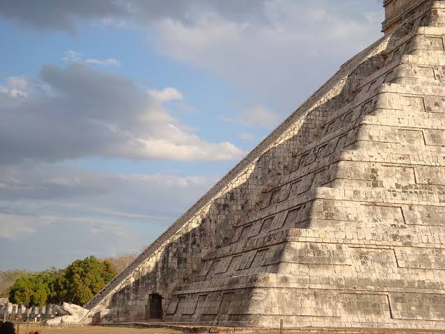

Nuestros Tours Destacados

Aventura en Sisal
Kayak en manglares para ver flamingos, ojo de agua, paseo en bicicleta, historia del puerto y tiempo en la playa.

Maravillas Mayas y Haciendas
Uxmal, hacienda henequenera y mirador del punto más alto de la península.

Descubre Mérida
Mérida city tour, Casa Montejo, catedral, murales, mercado, museo de la ciudad, Paseo Montejo y casonas.

Chichén Itzá Esencial
Tour a Chichén Itzá con cenote y pueblo maya.

Izamal, la Ciudad Amarilla
Tour a Izamal con taller de artesanos.

El Camino de la Emperatriz
Descubre la historia del Camino de la Emperatriz.

Relajación en la Playa
Tiempo libre para disfrutar de las hermosas playas de Yucatán.